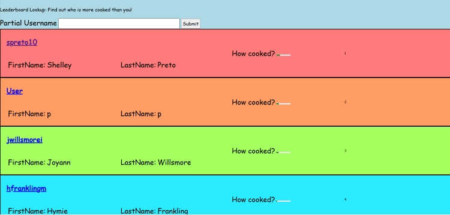
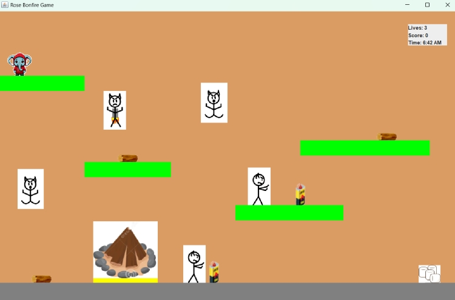

Portfolio
Cooked Homework Tracker ▼
Created a homework tracker to track assignments and compare progress with other students.
Technologies: SQL, Java, HTML, JavaScript, CSS
Team Project: 3 people, used GitHub for version control, pair programming.

RISC-V Assembler ▼
Created an assembler converting RISC-V Assembly code to machine code for R, I, S, SB, U, & UJ types.
Technologies: Python
Team Project: 2 people, pair programmed entire assembler, hosted on GitHub.
No image available at the moment because we didn't have a UI to visualize what was happening and showing the code could be considered academic misconduct.
Rose Bonfire Game ▼
Developed a 2D platformer game with collision detection, health, and points system.
Technologies: Java
Team Project: 3 people, roles alternated between Reviewer, Navigator, and Driver. GitHub for repository.
